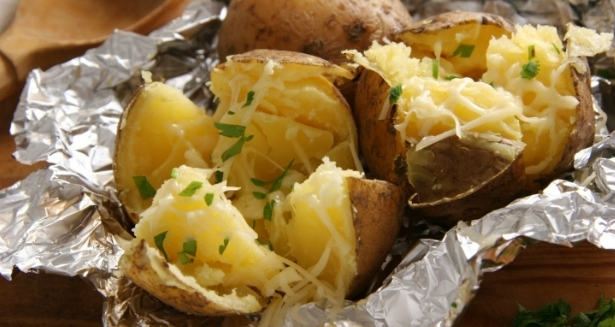
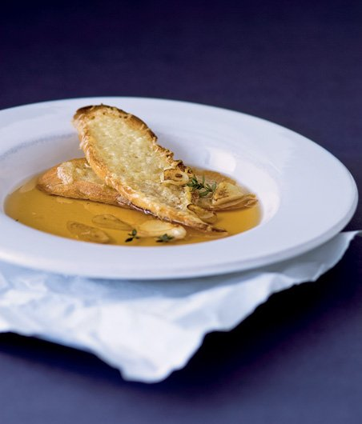
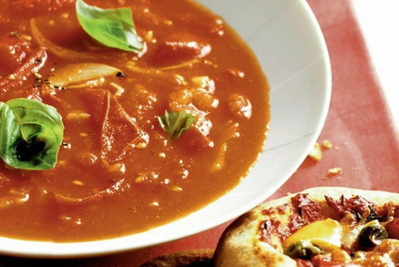
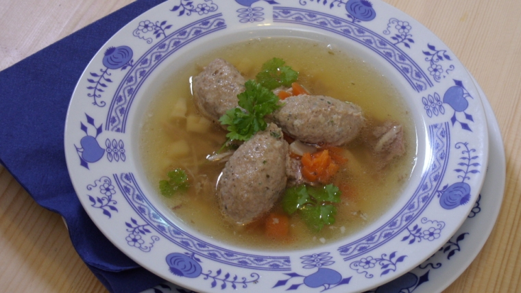

ITU - Elektronická kuchařka
Domů
Kategorie
Polévky
Jídla z hovězího masa
Jídla z kuřecího masa
Jídla z ryb
Deserty
Ostatní
Přidat recept
Rozšířené vyhledávání
Kategorie: Polévky

Domácí bramboračka
30 - 60 minut

Česnečka
30 - 60 minut

Rajská polévka
30 - 60 minut
Zeleninová polévka
30 - 60 minut

Slepičí vývar s játrovými knedlíčky
60 minut a více
<< Předchozí recepty
Další recepty >>